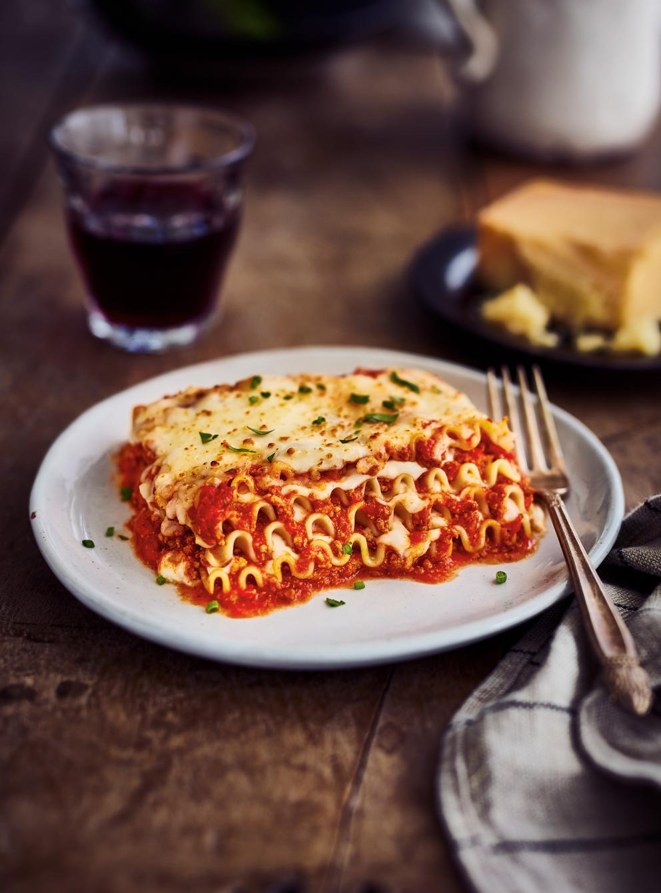

Recette de Lasagne

Difficile de ne pas succomber à des étages de pâtes tendres garnis de sauce à la viande tomatée et de fromage qui s’étire à l’infini. Sans oublier les rebords des pâtes, dorés et croustillants, que tout le monde s’arrache. Nous avons développé la meilleure des recettes à base d’une sauce au porc et au bœuf haché, d’une béchamel et de fromage caciocavallo. Sans prétention... Et vraiment très bon!
Ingredients
Sauce à la viande
7,5 ml (1 ½ c. à thé) d’épices à marinade
2,5 ml (1/2 c. à thé) de graines de fenouil
1 ml (1/4 c. à thé) de flocons de piment broyé
340 g (3/4 lb) de porc haché maigre
Sauce Béchamel
40 g (3 c. à soupe) de beurre
40 g (1/4 tasse) de farine tout usage non blanchie
625 ml (2 1/2 tasses) de lait
35 g (1/2 tasse) de fromage parmesan frais râpé finement
Préparation
Sauce à la viande
Dans un mortier à l’aide d’un pilon ou dans un moulin à épices, réduire les épices en poudre.
Dans une grande casserole à feu élevé, cuire les viandes avec les épices moulues dans l’huile en les émiettant à la cuillère de bois, jusqu’à ce qu’elles soient dorées. Saler et poivrer. Ajouter les oignons, le céleri et l’ail. Poursuivre la cuisson à feu moyen 5 minutes
Ajouter les tomates et l’origan. À l’aide d’un pilon à pommes de terre, réduire les tomates en purée en les pressant dans la casserole. Porter à ébullition et laisser mijoter doucement 1 h 30 en remuant régulièrement ou jusqu’à ce que la sauce ait réduit du quart. Rectifier l’assaisonnement.
Sauce béchamel
Entre-temps, dans une casserole à feu moyen, fondre le beurre. Ajouter la farine et poursuivre la cuisson 1 minute en remuant au fouet. Ajouter le lait en fouettant. Porter à ébullition et laisser mijoter doucement 2 minutes ou jusqu’à ce que le mélange épaississe. Incorporer le parmesan. Saler et poivrer. Couvrir et réserver au chaud.
Lasagne
Entre-temps, dans une grande casserole d’eau bouillante salée, cuire les pâtes très al dente. Égoutter. Huiler les pâtes et les étendre sur une plaque de cuisson. Couvrir d’un linge humide ou de pellicule plastique.
Placer la grille au centre du four. Préchauffer le four à 190 °C (375 °F).